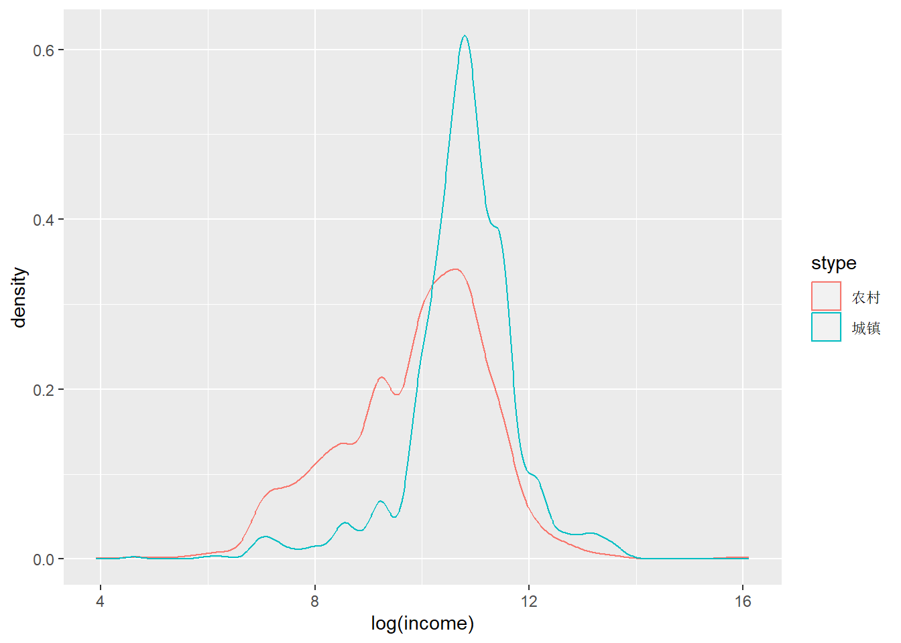
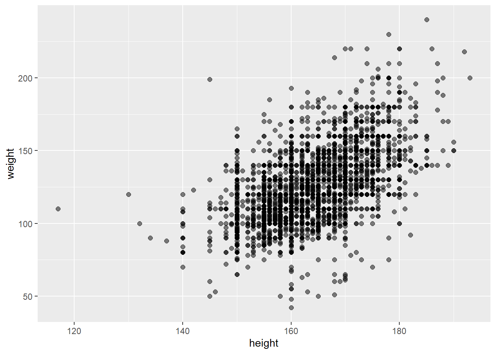
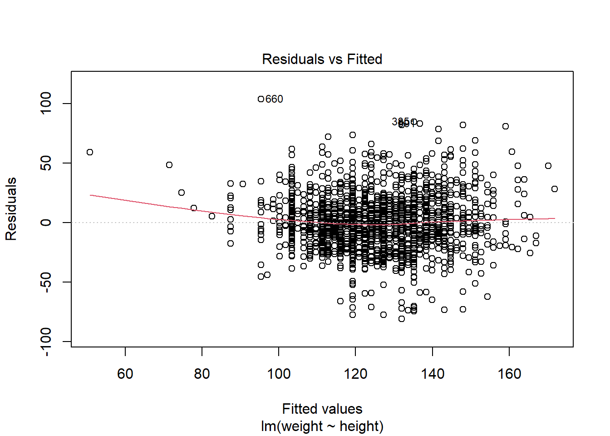

5 简单线性回归 {#Simple OLS}
代码提供： 胡慧怡 何舒欣 李清仪 于芊
5.1 简单线性回归介绍 {# OLS-inro}
在R中，拟合线性模型最基本的函数就是lm()，格式为：
myfit <- lm(formula, data)
其中，formula指要拟合的模型形式，data是一个数据框，包含了用于拟合模型的数据。
读入CGSS2021核心模块的数据。
load(file = "core.RData")拿到一份数据，需要知道其含义。
core %>% head()## # A tibble: 6 × 8
## gender age agegroup height weight educ marriage income
## <fct> <dbl> <fct> <dbl> <dbl> <fct> <fct> <dbl>
## 1 女 54 45~60岁 160 118 中等教育 离婚 96000
## 2 女 76 60岁以上 160 120 中等教育 初婚有配偶 60000
## 3 男 72 60岁以上 172 156 高等教育 初婚有配偶 96000
## 4 男 35 30~45岁 172 130 高等教育 初婚有配偶 160000
## 5 女 63 60岁以上 158 115 中等教育 初婚有配偶 48000
## 6 男 25 30岁以下 180 150 高等教育 未婚 600000进行回归分析前需要检查缺失值。
core %>%
summarise_all(
~ sum(is.na(.))
)## # A tibble: 1 × 8
## gender age agegroup height weight educ marriage income
## <int> <int> <int> <int> <int> <int> <int> <int>
## 1 0 0 0 0 0 0 0 0导入的core数据我们已经在前面处理过了缺失值，不再赘述。
查看CGSS2021调研中男女数量的情况。
core %>% count(gender)## # A tibble: 2 × 2
## gender n
## <fct> <int>
## 1 男 3314
## 2 女 3865以性别分组，查看男女的年龄、身高、体重和收入的基本状况。
core %>%
group_by(gender) %>%
summarise(
n = n(),
mean_age = mean(age),
mean_height = mean(height),
mean_weight = mean(weight),
mean_income = mean(income)
)## # A tibble: 2 × 6
## gender n mean_age mean_height mean_weight mean_income
## <fct> <int> <dbl> <dbl> <dbl> <dbl>
## 1 男 3314 52.6 169. 134. 64819.
## 2 女 3865 51.5 159. 116. 40845.ggplot作图会更加直观
core %>%
ggplot(aes(x = height, color = gender)) +
geom_density()
男性的身高是否就比女性的更高？
身高的增长会导致体重的增加吗？（面板数据）
年龄的增长会导致身高的增加吗？
年纪越大，挣得就更多吗？
core %>%
ggplot(aes(x = weight, y = height)) +
geom_point()
mod1 <- lm(formula = weight ~ height, data = core)summary(mod1)##
## Call:
## lm(formula = weight ~ height, data = core)
##
## Residuals:
## Min 1Q Median 3Q Max
## -83.693 -13.117 -0.905 11.555 110.403
##
## Coefficients:
## Estimate Std. Error t value Pr(>|t|)
## (Intercept) -130.77211 4.63425 -28.22 <2e-16 ***
## height 1.55760 0.02825 55.13 <2e-16 ***
## ---
## Signif. codes: 0 '***' 0.001 '**' 0.01 '*' 0.05 '.' 0.1 ' ' 1
##
## Residual standard error: 19.86 on 7177 degrees of freedom
## Multiple R-squared: 0.2975, Adjusted R-squared: 0.2974
## F-statistic: 3039 on 1 and 7177 DF, p-value: < 2.2e-16# predict(mod1) # predictions at original x values
core %>% modelr::add_predictions(mod1)## # A tibble: 7,179 × 9
## gender age agegroup height weight educ marriage income pred
## <fct> <dbl> <fct> <dbl> <dbl> <fct> <fct> <dbl> <dbl>
## 1 女 54 45~60岁 160 118 中等教育 离婚 96000 118.
## 2 女 76 60岁以上 160 120 中等教育 初婚有配偶 60000 118.
## 3 男 72 60岁以上 172 156 高等教育 初婚有配偶 96000 137.
## 4 男 35 30~45岁 172 130 高等教育 初婚有配偶 160000 137.
## 5 女 63 60岁以上 158 115 中等教育 初婚有配偶 48000 115.
## 6 男 25 30岁以下 180 150 高等教育 未婚 600000 150.
## 7 女 38 30~45岁 160 90 高等教育 初婚有配偶 400000 118.
## 8 男 76 60岁以上 164 100 中等教育 同居 78000 125.
## 9 男 34 30~45岁 187 198 高等教育 初婚有配偶 100000 160.
## 10 男 30 30岁以下 165 120 高等教育 未婚 200000 126.
## # ℹ 7,169 more rows# resid(mod1)
core %>%
modelr::add_predictions(mod1) %>%
modelr::add_residuals(mod1)## # A tibble: 7,179 × 10
## gender age agegroup height weight educ marriage income pred resid
## <fct> <dbl> <fct> <dbl> <dbl> <fct> <fct> <dbl> <dbl> <dbl>
## 1 女 54 45~60岁 160 118 中等教育 离婚 96000 118. -0.445
## 2 女 76 60岁以上 160 120 中等教育 初婚有配偶 60000 118. 1.56
## 3 男 72 60岁以上 172 156 高等教育 初婚有配偶 96000 137. 18.9
## 4 男 35 30~45岁 172 130 高等教育 初婚有配偶 160000 137. -7.14
## 5 女 63 60岁以上 158 115 中等教育 初婚有配偶 48000 115. -0.329
## 6 男 25 30岁以下 180 150 高等教育 未婚 600000 150. 0.403
## 7 女 38 30~45岁 160 90 高等教育 初婚有配偶 400000 118. -28.4
## 8 男 76 60岁以上 164 100 中等教育 同居 78000 125. -24.7
## 9 男 34 30~45岁 187 198 高等教育 初婚有配偶 100000 160. 37.5
## 10 男 30 30岁以下 165 120 高等教育 未婚 200000 126. -6.23
## # ℹ 7,169 more rowscore %>%
ggplot(aes(x = height, y = weight)) +
geom_point(alpha = 0.25) +
geom_smooth(method = "lm", se = FALSE)## `geom_smooth()` using formula = 'y ~ x'par(mfrow=c(2,2))
plot(mod1)